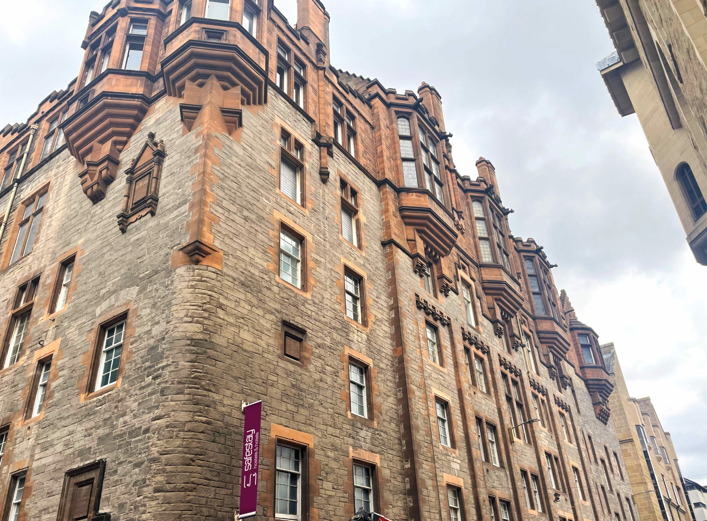
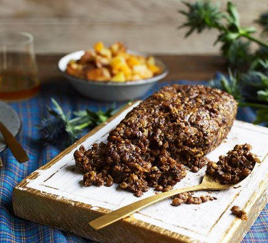
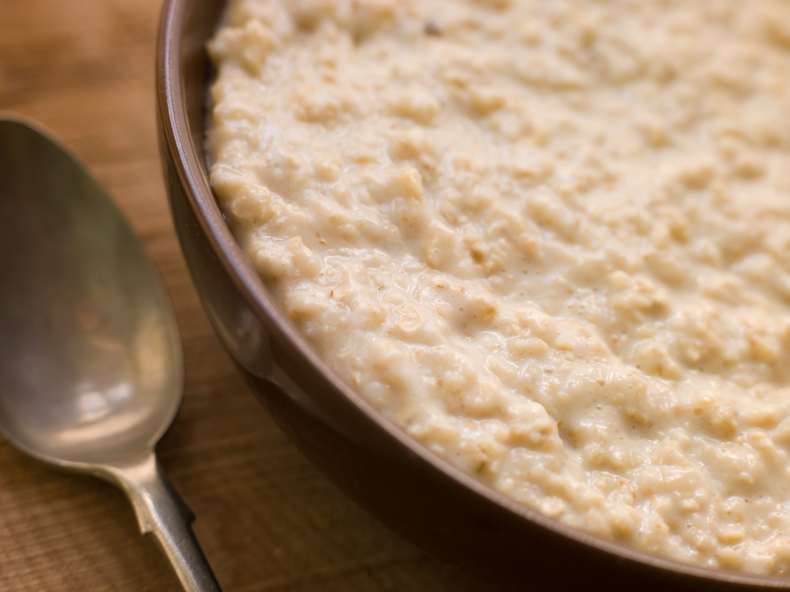
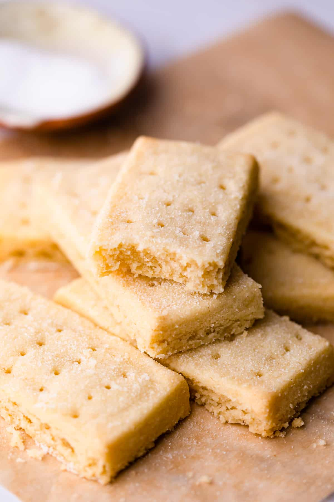
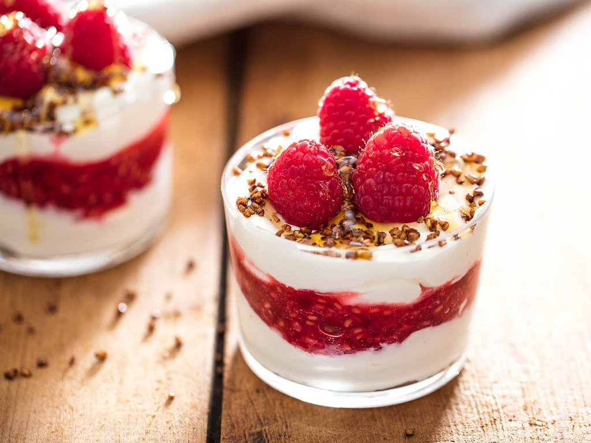
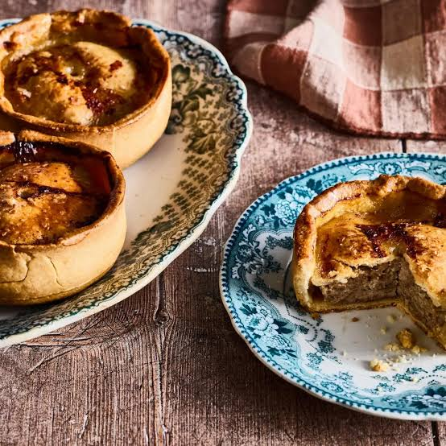

25 a 28 de setembro de 2026
116 Cowgate, Edinburgh EH1 1JN, UK
Check-in 15h | Check-out 11h · Recepção 24h/7
🍴 Não tem cozinha compartilhada. Levar talheres!
💨 Tem secador de cabelo na recepção.
🌧️ Escócia pode chover a qualquer momento. Capa de chuva?
Mercados próximos:






Ônibus urbano (Lothian): £2,20 por viagem no cartão por aproximação. Usando o mesmo cartão o dia todo, o teto diário é ~£5 automático. Não precisa comprar bilhete.
Aeroporto ↔ centro: Airlink 100, roda 24h, ~30 min até Waverley Bridge // é a última parada (7 min a pé do hostel).
Volta (29/09, 4h da manhã): Airlink 24h.
Queensferry: trem Haymarket → Dalmeny, ~20 min, ~£5 a 7 ida e volta, + 15 min a pé ladeira abaixo.
Craigmillar: ônibus ~20 a 25 min da região da North Bridge + 10 min a pé.
O resto: 45 km a pé =D
Chegada de madrugada no aeroporto → Airlink até o centro → malas no hostel → cidade velha inteira a pé.
Início da manhã
Meio-dia
Fim da tarde
Noite
💰 Dia: ~£40 a 45 (almoço + Elephant House + pizza + entrada e bebidas na balada) · extra: castelo £27 se rolar
Viaduto do Expresso de Hogwarts, Glencoe, Rannoch Moor. Levar lanche e casaco!
Início da manhã
Meio-dia
Noite
💰 Dia: ~£20 (lanche + jantar do mercado + noite) + o valor do tour
Manhã de lago, ruínas e jardim secreto; tarde de castelo medieval; noite rolê subsolo??
Início da manhã
Início da tarde
Fim da tarde
💰 Dia: ~£25 (Craigmillar £8 + ônibus + comida)
Início da manhã
Meio-dia
Início da tarde
Fim da tarde
Noite
Madrugada
💰 Dia: ~£30 (café + trem + pint + comida)
Carregando…
Carregando…
Carregando…
Carregando…
Carregando…
Carregando o roteiro de Londres
Carregando o roteiro de Paris